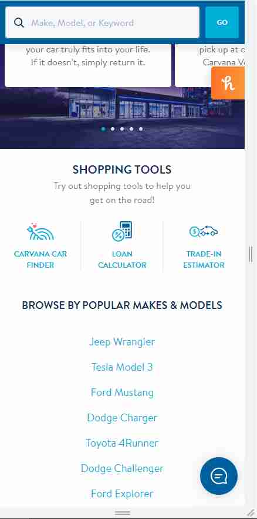

Rule of Thirds
Carvana
https://www.carvana.com/
Carvana separates their home page into 3 sections: features, tools and generic browsers, and quick footer links.
Visual Hierarchy
Prototypr
https://prototypr.io/home/Prototypr uses visual heirarchy within the sizes of the images and cards. At the top you can see its most-featured content ("featured articles"); below that, you can see "Latest Tools" (another, but less significant, feature of its site). At the bottom, you finally get into the public stuff throughout their circle, of which I assume they don't want you to focus too heavily on, since it's not a feature...?
White Space and Clean Design
SuccessiveTech
https://medium.com/successivetechSuccessiveTech uses plenty of white space: the images displayed have a white background/border; the whole page has "wiggle-room" for the eyes, so it doesn't appear cluttered and shoved together; and the use of margins and padding to add gaps between elements and pieces is used crazily! Just look at the source code and styles applied! There's "u-marginTop7", "u-marginTop15", "u-marginLeftNegative12", "u-paddingTop20", etc., ...